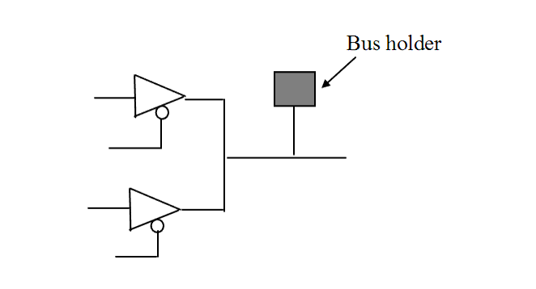

| Description | A tristate net (that is, a net driven by tristate drivers) must be connected to a single bus keeper that keeps the value on the net when it is not driven (driver in high-impedance state). Bus keepers are needed on tristate nets to avoid floating nets. |
| Policy | DESIGN |
| Ruleset | STRUCTURE |
| Language | VHDL/Verilog |
| Type | Hardware |
| Severity | Error |
This is an example of valid Verilog code, followed by a circuit diagram that illustrates the correct approach:
module ntl_str73_top ( ); wire Enable, net_01, net_02; assign net_02 = Enable ? net_01 : 1'bz; //BK1x0 - bus keeper cell (bus holder) BK1x0 I1(net_02); // OK -- bus keeper cell (bus holder) for a tristate net ... endmodule